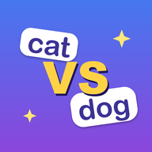

こんな使い方ができます
授業のはじめの5分
小テストの代わりに、決めたステージを1つずつ。はやく答えるほど大ダメージなので、自然と集中します。
朝学習・宿題に
「ステップ1のエリア2まで」のように範囲を決めて出せます。まちがえた単語は単語帳に残り、復習モードで覚えるまで解き直せます。
テスト・英検の前に
英→日・日→英・リスニング・例文の穴埋めの4つの問題の形から選べます。聞く力や、文の中での使い方も確かめられます。
レベルと範囲
10のレベルがあり、それぞれステップ1〜3（各30ステージ）に分かれています。レベルの名前を押すと、単語の例と4択クイズを見られます。
| レベル | 語数 | ステップ1〜3 |
|---|---|---|
| 中学 | 822語 | 1：中学1年生で習うレベルの英単語、約300語です。英語をはじめて学ぶ人や、基礎から見直したい人に。 2：中学2年生で習うレベルの英単語、約270語です。ステップ1の次に。 3：中学3年生で習うレベルの英単語、約240語です。高校入試や英検3級の土台に。 |
| 高校 | 1,514語 | 1：高校1年生で学ぶレベルの英単語、約500語です。中学の単語を終えた人の次の一歩に。 2：高校2年生で学ぶレベルの英単語、約500語です。長文読解で出会う単語を中心に。 3：高校3年生で学ぶレベルの英単語、約500語です。大学入試や英検2級に向けて。 |
| 英検3級 | 993語 | 1：英検3級によく出る単語のうち、基本の単語です。中学2年生くらいのレベルから。 2：英検3級によく出る、標準レベルの単語です。環境・社会・旅行など、長文によく出る話題の単語を中心に。 3：英検3級の中でも、難しめの単語と熟語、会話でよく使う表現です。合格をより確かにしたい人に。 |
| 英検準2級 | 991語 | 1：英検準2級によく出る単語のうち、基本の単語です。中学の単語を終えた人の最初の一歩に。 2：英検準2級によく出る、標準レベルの単語です。長文や会話でよく見かける単語を中心に。 3：英検準2級の中でも、難しめの単語です。合格をより確かにしたい人に。 |
| 英検2級 | 1,473語 | 1：英検2級によく出る単語のうち、基本の単語です。英検準2級の次の一歩に。 2：英検2級によく出る、標準レベルの単語です。環境・健康・仕事など、長文によく出る話題の単語を中心に。 3：英検2級の中でも、難しめの単語です。合格をより確かにしたい人や、大学入試に向けて。 |
| 英検準1級 | 1,498語 | 1：英検準1級によく出る単語のうち、基本の単語です。英検2級を終えた人の次の一歩に。 2：英検準1級の長文によく出る、社会・経済・科学・医療・環境などの話題の単語です。 3：英検準1級の中でも、難しめの単語と句動詞です。人の性格や態度を表す語など、合格をより確かにしたい人に。 |
| TOEIC | 1,442語 | 1：TOEIC で500点を目指す人向けの、オフィス・お店・旅行の基本の単語です。 2：TOEIC で650点を目指す人向けの、会議・人事・取引など仕事でよく使う単語です。 3：TOEIC で800点を目指す人向けの、契約・財務・経営などの難しめの単語です。 |
| TOEFL・IELTS | 1,500語 | 1：TOEFL・IELTS によく出る、論文や講義で使う学術的な基本の単語です。留学を目指す人の最初の一歩に。 2：TOEFL・IELTS の長文や講義によく出る、生物・地学・天文・歴史・心理・経済などの分野の単語です。 3：TOEFL・IELTS で高い点を目指す人向けの、難しめの学術的な単語です。TOEFL 100点・IELTS 7.0 を目指して。 |
| 英熟語 | 888語 | 1：大学受験によく出る英熟語のうち、基本の熟語です。共通テストや高校の定期テストに。 2：大学受験によく出る、標準レベルの英熟語です。長文や文法問題でよく見かける熟語を中心に。 3：大学受験によく出る英熟語の中でも、難しめの熟語と決まった言い回しです。難関大学に向けて。 |
| 英会話 | 1,200語 | 1：日常でよく使う英会話の、基本の表現です。あいさつ・お礼・あいづち・お願いなど、毎日使う言い方を中心に。 2：日常でよく使う英会話の、場面別の表現です。買い物・レストラン・ホテル・空港・病院・仕事などで使う言い方と単語。 3：日常でよく使う英会話の中でも、ネイティブがよく使う自然な言い回しです。くだけた表現や句動詞も。 |
はじめ方（生徒さんの操作）
- App Store で「英単語バトル 覚えて戦う」と検索するか、下の案内の QR コードを読み取って入れる
- はじめて開くと遊び方の説明のあとにレベルを選ぶ画面が出るので、先生が指定したレベルを選ぶ
- ホームの「レベル」でレベルを、その下でステップを選び、マップでステージを選ぶ
- 問題の形（英→日・日→英・リスニング・例文の穴埋め）は、設定で切り替える
よくある質問
お金はかかりますか？
かかりません。すべてのレベル・ステージを無料で遊べます。アプリの中に任意の課金（学習パス・広告を消す・コイン）がありますが、買わなくても学習の範囲は同じです。生徒さんの端末では、保護者の方の「購入の承認」の設定もご利用ください。
アカウントの登録や、個人情報の入力は要りますか？
要りません。名前・メールアドレス・学校名などを入力する場面はありません。学習の記録は端末の中だけに保存します。広告と利用状況の計測のために、端末の識別子などを使うことがあります（詳しくはプライバシーポリシー）。
広告は出ますか？
出ます。画面の下のバナー広告と、生徒さんが自分で押したときだけ流れる動画広告（報酬型）です。問題に答えているバトルの画面には広告を出しません。授業中に勝手に動画広告が流れることもありません。
授業の途中で遊べなくなりませんか？
ステージに挑戦するとスタミナを使います。満タンのときは続けて6ステージ遊べて、スタミナは5分で1ずつ回復します。10分ほどの小テスト代わりなら止まりません。まちがえた単語の復習モードはスタミナを使いません。
どの端末で使えますか？
iPhone と iPad（iOS 17 以上）です。学校の iPad でも使えます。Android 版・パソコン版はありません。
先生が生徒の成績を見られますか？
今はできません。ステージのクリア画面や、図鑑・単語帳の画面を見せてもらう形でご確認ください。先生向けの機能のご要望は、お問い合わせからお寄せください。
生徒さんに配る案内
下の枠を印刷して配れます（A4 1枚に同じ案内が2つ入るので、半分に切って使えます）。空欄に、取り組むレベルや範囲を書き込んでください。

英単語バトル
4択の英単語クイズでモンスターを倒そう！
入れ方：iPhone・iPad のカメラで QR コードを読み取る
または App Store で「英単語バトル 覚えて戦う」と検索
無料です。名前などの登録は要りません。
| レベル | |
|---|---|
| 範囲 | ステップ エリア 〜 |
| 問題の形 | 英→日 ・ 日→英 ・ リスニング ・ 例文の穴埋め |
| いつまで |
ご意見・ご要望は mytanapp800@gmail.com まで。
App Store で見る（無料）